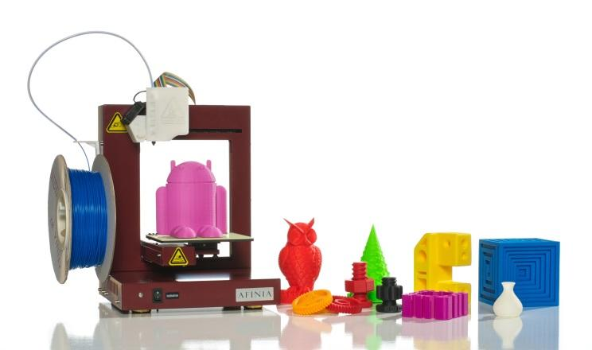
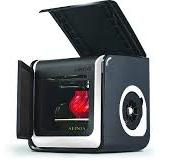
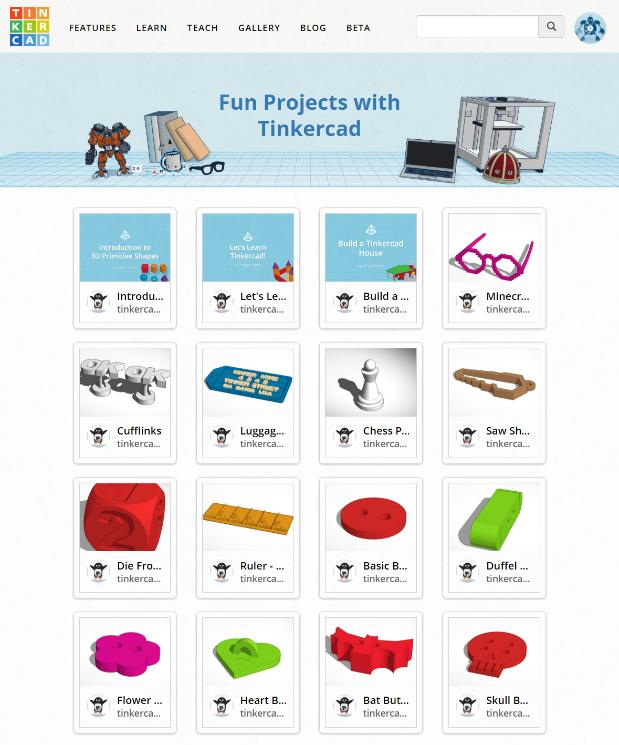
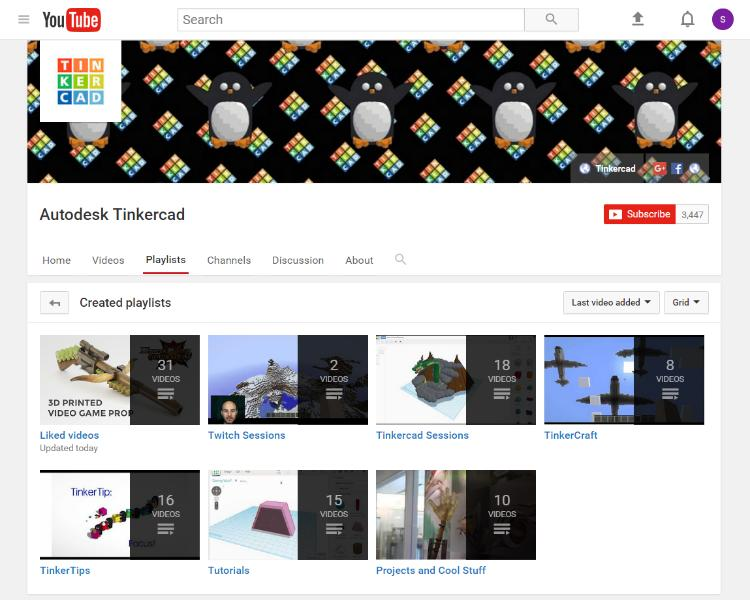
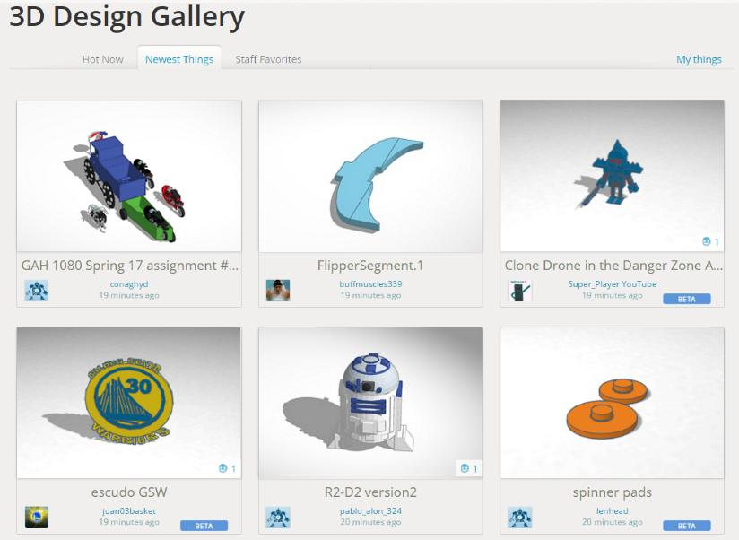

Do you have a 3D printer in your SmartLab? If so, ask your Facilitator to print your 3D object. Every 3D printer works a little differently, so make sure you understand how to use your SmartLab printer.
 
SmartLab Rule: Only print objects that YOU designed. If you download someone else's design, change it to make it your own.
  
3D printers can be used to make all kinds of useful objects.What kinds of uses for 3D printing can you think of?
Design a new invention using Tinkercad that you can 3D print.
Ask yourself:
Share your invention with someone else. Ask them how they would improve it.